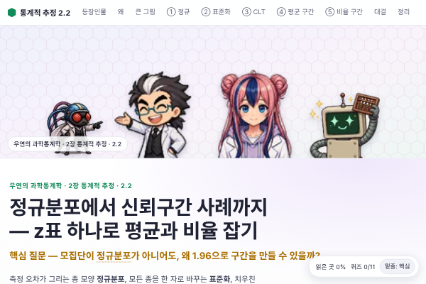
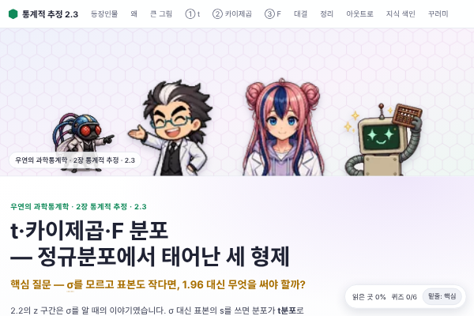
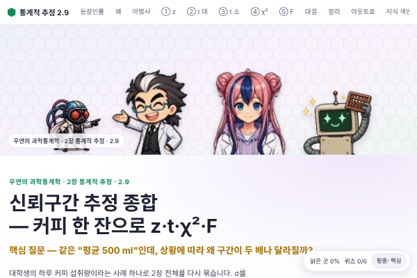
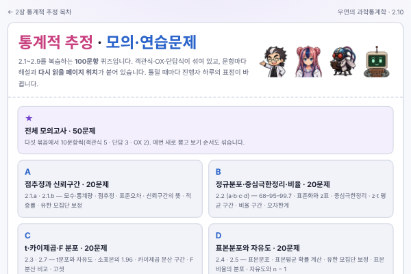

공장 과자 1만 개의 평균 무게, 유권자 전체의 지지율, 효모 한 통의 농도 — 전부를 잴 수 없을 때 우리는 표본 한 줌으로 말합니다. 박사·하루·초파리 연구원·주판봇과 함께 점추정에서 신뢰구간, t·χ²·F 분포까지 직접 돌려 보며 익히고, 마지막에 100문항 모의고사로 정리합니다.
"95%의 확률로 μ가 들어 있다"는 왜 틀린 말일까?
과자 한 줌으로 상자 전체 말하기. 모수·통계량, 점추정, 표준오차, 그리고 고리 100번 던지기로 보는 95%의 뜻.
정답을 봉인한 모집단에서 95·99% 구간을 1,000번 만들어 채점합니다. 내 CSV를 열어 같은 실습을 할 수 있습니다.

z표 하나로 평균과 비율 잡기. 정규분포·표준화·중심극한정리, z·t 평균 구간, 품질검사와 여론조사의 비율 구간.

정규분포에서 태어난 세 형제. σ를 모를 때의 t, 분산을 재는 χ², 두 분산을 비교하는 F.
12명에서 나올 수 있는 표본 220개를 모두 세어 표본분포를 만들고, 유한 모집단 보정과 표본비율의 분포까지.
n − 1은 어디서 왔나. 평균이 고정된 점수로 자유도를 만지고, n과 n−1로 나눈 분산을 5,000번 비교합니다.
숫자를 바꾸는 실수와 비트코인 과제. 코드의 흔한 실수를 켜고 끄며 구간이 어떻게 틀어지는지 봅니다.
시료 몇 병으로 말하는 법. 고셋이 양조장에서 만난 소표본 문제를 실험과 계산기로 따라갑니다.
모의 환자 1,000명 검사표에서 변수별 95% 구간, 남녀 차이의 구간, 기준값 비율의 구간을 만듭니다.

커피 한 잔으로 z·t·χ²·F. 분포 고르기 마법사와 구간에서 의사결정까지 2장을 한 번에 정리합니다.

2.1~2.9를 복습하는 100문항 게임. 전체 50문제 모의고사와 묶음별 20문제, 타이머·효과음·오답 리뷰, 인쇄용 PDF.
점추정 → 표준오차 → 신뢰구간. 95%는 "방법의 적중률"입니다.
정규·z, 그리고 σ를 모를 때 t, 분산의 χ², 분산 비의 F.
표본분포를 직접 세어 보고, n − 1의 이유를 확인합니다.
코드 실수, 소표본, 의료 데이터, 종합 마법사, 그리고 모의고사.
해설과 판정. 판정은 숫자대로.
실험을 돌리고 숫자를 발표. 모의고사 진행도 맡습니다.
의심하는 쪽. "정말 그럴까?"
확신하는 쪽. 높은 숫자에 건다.
쉬운 칸에서 시작해, 각 칸의 한계가 다음 칸을 부릅니다. 칸마다 직접 만지는 시뮬레이션과 계산기가 있어요.
초파리(의심)와 주판봇(확신)이 서로 다른 선택을 하고, 페이지 안의 계산으로 승패가 갈립니다. 결과 보기 전에 먼저 맞혀 보세요.
칸마다 확인 퀴즈, 노란 점선 밑줄은 용어 풀이. 다 읽었으면 2.10 모의고사(100문항)로 마무리하고, 틀린 문항은 링크로 바로 돌아갑니다.